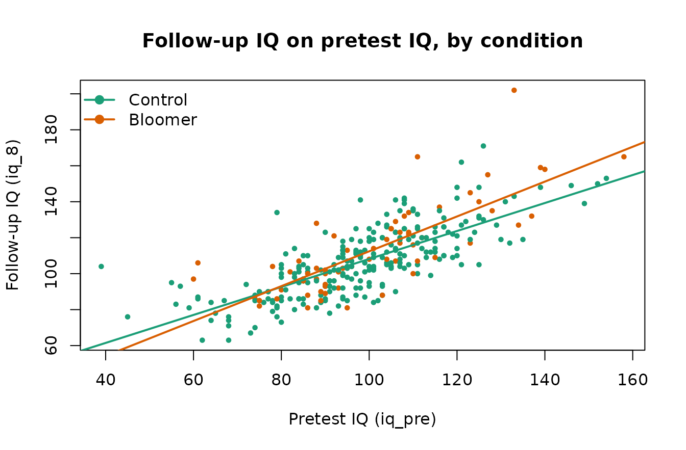

Heterogeneity of Regression in the Pygmalion Data
Ken Kelley
July 2026
Source:vignettes/pygmalion.Rmd
pygmalion.RmdThe Pygmalion data are the running heterogeneity-of-regression
example in Maxwell, Delaney, and Kelley’s Designing Experiments and
Analyzing Data: A Model Comparison Perspective, where the analysis
of covariance treatment developed by Delaney shows what happens when the
covariate-outcome slope differs across treatment groups. This vignette
follows that treatment. The study itself is one famous experiment; the
literature it provoked, 18 replications synthesized by
Raudenbush (1984), ships separately as teacher_expectancy
and is analyzed in vignette("teacher_expectancy"). The two
are kept apart on purpose: a single study and the accumulated evidence
about its claim are importantly different things, and DMAR treats them
as such.
The Data
pygmalion contains the teacher-expectancy data from
Rosenthal and Jacobson’s (1968) Pygmalion in the Classroom, the
experiment that introduced the Pygmalion effect: the
idea that a teacher’s expectations can become a self-fulfilling prophecy
for a pupil’s intellectual growth. At the start of the school year, a
randomly chosen ~20% of the children in each classroom (here
treatment == "Bloomer", n = 64) were described to
their teachers as likely “intellectual bloomers,” while the rest served
as controls (n = 246). The only manipulation was the
expectation planted in the teachers. Intelligence was measured before
the manipulation (iq_pre) and again at follow-up
(iq_8).
data(pygmalion)
# A curated summary of the substantive IQ variables; the 'type' column
# reports each variable's class.
descriptives(pygmalion[, c("iq_pre", "iq_4", "iq_8", "iq_gain")])$descriptives
#> variable type n n_missing prop_missing mean median sd min
#> 1 iq_pre integer 310 0 0 98.464516 98 18.67913 39
#> 2 iq_4 integer 310 0 0 101.677419 101 17.82327 58
#> 3 iq_8 integer 310 0 0 107.896774 105 20.44542 63
#> 4 iq_gain integer 310 0 0 9.432258 9 13.75680 -20
#> max q25 q75 skewness kurtosis
#> 1 158 86.00 109 0.1259678 0.6021197
#> 2 157 89.25 112 0.3690189 0.4106643
#> 3 202 93.00 120 0.7312527 1.2090930
#> 4 69 1.00 17 0.7959656 1.7672510
# Pupils per condition within each grade.
table(pygmalion$treatment, pygmalion$grade)
#>
#> 1 2 3 4 5 6
#> Control 45 46 40 47 25 43
#> Bloomer 7 12 13 12 9 11The same numbers ship with the book’s data companion package
(AMCP) as chapter_9_exercise_15; here the
experimental condition is a labeled factor and the columns use DMAR’s
descriptive names. The data set is the running example for
analysis of covariance (ANCOVA) with heterogeneity of
regression in Maxwell, Delaney, and Kelley, Designing
Experiments and Analyzing Data: A Model Comparison Perspective
(Chapter 9). Thorndike’s (1968) review questioned the reliability of the
underlying test (the Tests of General Ability, TOGA) at the extremes of
the score range for the youngest children, which is part of why these
data reward careful analysis.
The Homogeneity-of-Regression Assumption
A standard ANCOVA uses the pretest (iq_pre) as a
covariate and assumes that the regression of the outcome on the
covariate has the same slope in every group. We can
look at that assumption directly by fitting separate slopes and
overlaying them.
fit_het <- lm(iq_8 ~ iq_pre * treatment, data = pygmalion)
round(coef(fit_het), 5)
#> (Intercept) iq_pre treatmentBloomer
#> 30.36587 0.77799 -14.83283
#> iq_pre:treatmentBloomer
#> 0.19096The control slope is 0.778; adding the interaction gives a steeper bloomer slope of 0.969.
cols <- c(Control = "#1b9e77", Bloomer = "#d95f02")
plot(pygmalion$iq_pre, pygmalion$iq_8,
col = cols[pygmalion$treatment], pch = 19, cex = 0.6,
xlab = "Pretest IQ (iq_pre)", ylab = "Follow-up IQ (iq_8)",
main = "Follow-up IQ on pretest IQ, by condition")
for (g in levels(pygmalion$treatment)) {
ab <- coef(lm(iq_8 ~ iq_pre, data = subset(pygmalion, treatment == g)))
abline(ab, col = cols[g], lwd = 2)
}
legend("topleft", legend = names(cols), col = cols, pch = 19, lwd = 2, bty = "n")
The lines are not parallel: the relationship between pretest and follow-up IQ is stronger for the bloomers. The formal test is the treatment-by-covariate interaction, which is a 1-degree-of-freedom comparison of the additive (common-slope) model to the separate-slopes model:
fit_add <- lm(iq_8 ~ iq_pre + treatment, data = pygmalion)
print_anova(anova(fit_add, fit_het))
#> Analysis of Variance Table
#>
#> Model 1: iq_8 ~ iq_pre + treatment
#> Model 2: iq_8 ~ iq_pre * treatment
#>
#> Res.Df RSS Df Sum of Sq F Pr(>F)
#> 1 307 54329.63 NA NA NA <NA>
#> 2 306 53649.49 1 680.1436 3.879327 0.0498A Tidy ANCOVA with ancova()
DMAR::ancova() returns the adjusted
(covariate-corrected) cell means, the omnibus F for the
treatment effect, partial eta^2 and partial
omega^2 with noncentral F confidence intervals,
and the homogeneity-of-regression test, all in one tidy data frame.
res <- ancova(pygmalion, outcome = "iq_8", treatment = "treatment",
covariates = "iq_pre")
as_kable(res)| term | value |
|---|---|
| F_value | 5.38 |
| df_1 | 1 |
| df_2 | 307 |
| p_value | 0.0210 |
| sum_of_squares_type | 3 |
| eta_squared_partial | 0.0172 |
| eta_squared_partial_lower | 0.000201 |
| eta_squared_partial_upper | 0.056 |
| omega_squared_partial | 0.0139 |
| omega_squared_partial_lower | 0.000201 |
| omega_squared_partial_upper | 0.056 |
| adjusted_mean[Control] | 107 |
| adjusted_mean[Bloomer] | 111 |
| se_adjusted_mean[Control] | 0.849 |
| se_adjusted_mean[Bloomer] | 1.67 |
| F_homogeneity_of_regression | 3.88 |
| df_homogeneity_of_regression | 1 |
| p_homogeneity_of_regression | 0.0498 |
Note that the F_homogeneity_of_regression row reproduces
the 1-df interaction test above, and that the adjusted means come from
the common-slope model. When the slopes genuinely differ, a single
“adjusted mean difference” is an incomplete summary, which is the point
of the next section.
Reported in a results-section sentence, the common-slope model shows a treatment effect adjusting for pretest IQ, F(1, 307) = 5.38, p = 0.0210, with partial = 0.017, 95% CI [0, 0.056].
The Treatment Effect Depends on the Covariate
Under heterogeneity of regression the estimated treatment effect is not a single number: it is a function of the covariate value at which it is evaluated, We can read it straight off the fitted separate-slopes model at any pretest value. Below we evaluate it at the covariate grand mean and at one standard deviation on either side.
x_bar <- mean(pygmalion$iq_pre)
x_sd <- sd(pygmalion$iq_pre)
x_at <- c(low = x_bar - x_sd, mean = x_bar, high = x_bar + x_sd)
effect_at <- function(x) {
nd <- data.frame(iq_pre = x)
pB <- predict(fit_het, transform(nd, treatment = factor("Bloomer", levels(pygmalion$treatment))))
pC <- predict(fit_het, transform(nd, treatment = factor("Control", levels(pygmalion$treatment))))
pB - pC
}
data.frame(iq_pre = round(x_at, 2),
estimated_effect = round(vapply(x_at, effect_at, numeric(1)), 3))
#> iq_pre estimated_effect
#> low 79.79 0.403
#> mean 98.46 3.970
#> high 117.14 7.537The estimated expectancy effect grows as pretest IQ increases, from
roughly 0.4 points at one SD below the mean to about 7.5 points at one
SD above it. Evaluating, testing, and planning for a treatment
effect at chosen covariate values, rather than only at the grand mean,
is exactly the problem treated by the variance of the estimated
treatment effect methodology of Li, McLouth, and Delaney (2020),
implemented natively as var_ete().
# Ingredients for that methodology (cf. var_ete()):
n_bloomer <- sum(pygmalion$treatment == "Bloomer")
n_control <- sum(pygmalion$treatment == "Control")
sigma2 <- sum(residuals(fit_het)^2) / fit_het$df.residual
sigmaz2 <- var(pygmalion$iq_pre)
slopes <- c(
Control = unname(coef(fit_het)["iq_pre"]),
Bloomer = unname(coef(fit_het)["iq_pre"] + coef(fit_het)["iq_pre:treatmentBloomer"])
)
round(c(n_bloomer = n_bloomer, n_control = n_control,
sigma2 = sigma2, sigmaz2 = sigmaz2, slopes), 5)
#> n_bloomer n_control sigma2 sigmaz2 Control Bloomer
#> 64.00000 246.00000 175.32513 348.90974 0.77799 0.96894
# Variance of the estimated treatment effect at the covariate mean.
var_ete(sigma2 = sigma2, sigma2_Z = sigmaz2,
n_1 = n_bloomer, n_2 = n_control,
beta_1 = unname(slopes["Bloomer"]),
beta_2 = unname(slopes["Control"]),
type = "sample", covariate_value = "sample_mean")| term | value |
|---|---|
| var_ete | 3.52 |
One Study and Its Literature
The analysis above is everything a single experiment can tell you,
and the heterogeneity of regression is its most lasting statistical
lesson. What it cannot tell you is whether the expectancy effect
replicates, for whom, and under what conditions. Fourteen years of
replications and Raudenbush’s (1984) synthesis answered those questions:
the effect appears when teachers barely know their pupils at induction
and disappears once they do. See
vignette("teacher_expectancy") for that meta-analysis
reproduced with combine_p(), meta_contrast(),
and meta_smd().
References
Kelley, K. (2007a). Confidence intervals for standardized effect sizes: Theory, application, and implementation. Journal of Statistical Software, 20(8), 1–24.
Kelley, K. (2007b). Methods for the behavioral, educational, and social sciences: An R package. Behavior Research Methods, 39(4), 979–984.
Maxwell, S. E., Delaney, H. D., & Kelley, K. (2027). Designing experiments and analyzing data: A model comparison perspective (4th ed.). Routledge. (Heterogeneity-of-regression ANCOVA, Chapter 9.)
Raudenbush, S. W. (1984). Magnitude of teacher expectancy effects on pupil IQ as a function of the credibility of expectancy induction: A synthesis of findings from 18 experiments. Journal of Educational Psychology, 76(1), 85–97.
Rosenthal, R., & Jacobson, L. (1968). Pygmalion in the classroom: Teacher expectation and pupils’ intellectual development. Holt, Rinehart and Winston.
Thorndike, R. L. (1968). Review of Pygmalion in the Classroom. American Educational Research Journal, 5(4), 708–711.